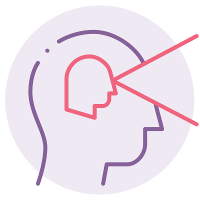
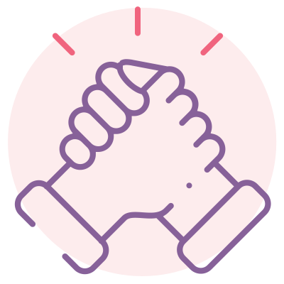
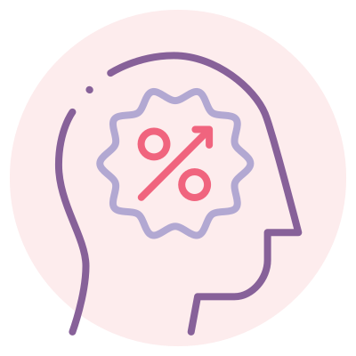
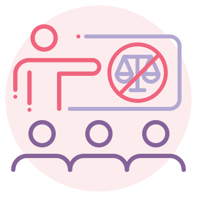

DiSC Page
DiSC® is a personal assessment tool used by more than one million people every year to help improve teamwork, communication, and productivity in the workplace.
DiSC is an acronym that stands for the four main personality profiles described in the DiSC model: (D)ominance, (i)nfluence, (S)teadiness and (C)onscientiousness.
- People with D personalities tend to be confident and place an emphasis on accomplishing bottom-line results.
- People with i personalities tend to be more open and place an emphasis on relationships and influencing or persuading others.
- People with S personalities tend to be dependable and place the emphasis on cooperation and sincerity.
- People with C personalities tend to place the emphasis on quality, accuracy, expertise, and competency.
Everything DiSC also measures priorities (the words around the circle), providing more nuanced and memorable feedback in profiles.
Why use DiSC?
Everything DiSC® assessments are used in thousands of organizations around the world, from sprawling government agencies and Fortune 500 companies to nonprofits and small businesses. The reason is simple: Everything DiSC® profiles help build stronger, more effective working relationships.
Raise self-awareness: Constructive change begins with self-knowledge. DiSC profiles show you how you respond to conflict, what motivates you or stresses you out, and how you solve problems.
Improve teamwork: Teams are where things get done in the modern workplace. DiSC profiles teach you how to improve communication and understanding between team members.
Make conflict more productive: DiSC profiles can turn conflict into a positive, productive exercise that helps your organization move forward boldly.
Develop stronger sales skills: DiSC profiles can also help improve your effectiveness in sales situations. Understanding and adapting to your customers' styles is essential for connecting on a human level and seeing each other "eye to eye."
Manage more effectively: Leaders become more naturally effective when they understand the dispositions and preferred working styles of their employees and other team members.
Train without judgment: No one likes to be judged. DiSC profiles level the playing field by giving trainers and trainees the non-judgmental information they need to train more effectively.